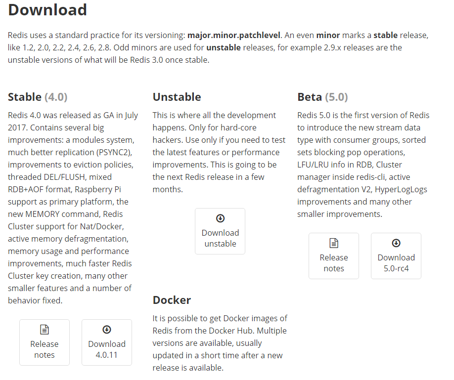
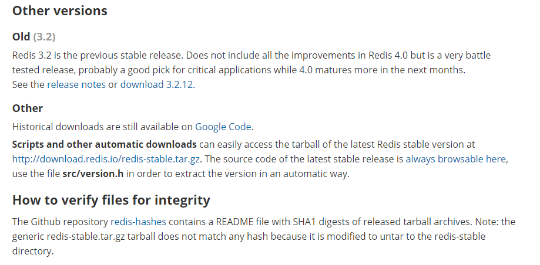
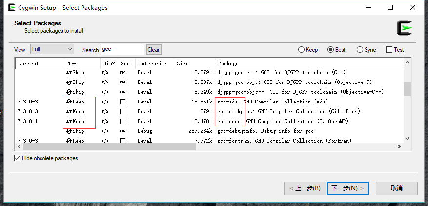
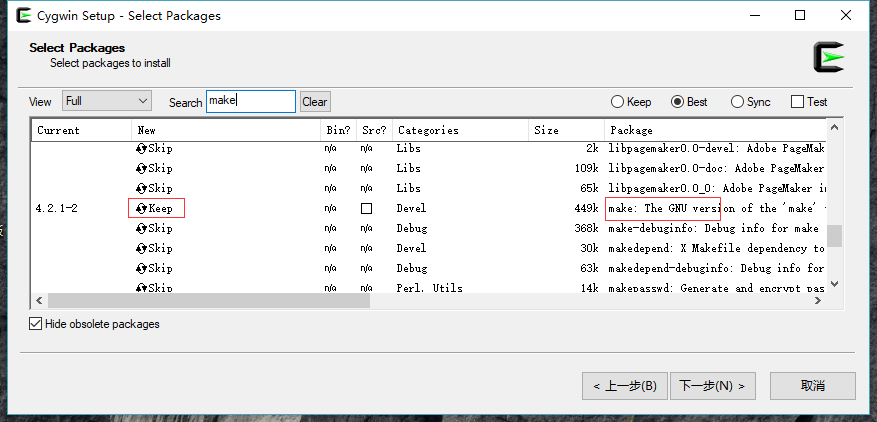
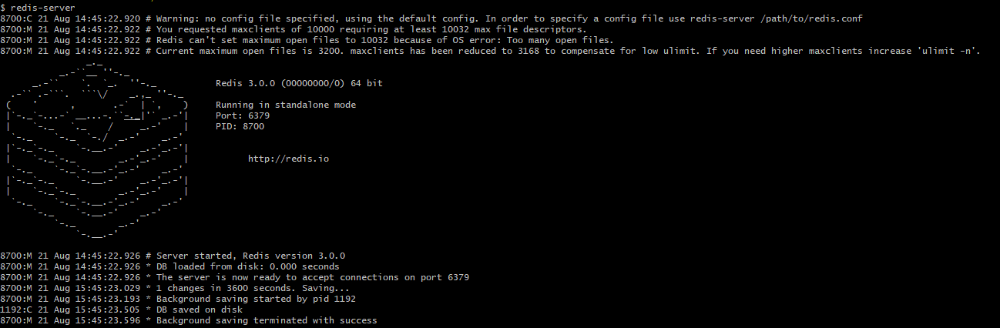

在学习Redis之前，首先要安装redis的运行环境，了解它的基础命令和基本知识。
下载redis
进入redis官网的下载页面https://redis.io/download

从这个页面我们可以得到的一些基本信息是，redis分为稳定版和非稳定版，其中偶数版本号为稳定版，奇数版本号为非稳定版。截至目前（2018年8月）最新的稳定版为4.0.11，Beta版为5.0-rc4，如果要下载之前的版本，页面往下拉

有oldVersion可以选择，直接提供下载的是3.2.12版本，如果要找其他版本，你可以通过这个连接http://download.redis.io/releases/下载，我安装的是3.0版本（3.0应该是redis的一个里程碑，加入集群支持后，redis完成了分布式的实现，新的embedded string编码格式，LRU算法的优化和其他性能的提升，如果之前接触过Redis，这些功能应该让你感到兴奋，从此memcache有的功能，redis几乎都有了，技术选型中使用redis将是更好的选择）
安装redis
在linux下安装
我是在centos6的虚拟机上安装，输入以下命令
1 | wget http://download.redis.io/releases/redis-3.0.0.tar.gz |
逐行执行，成功后再执行
1 | make install |
将启动命令等复制到bin目录中，方便以后敲命令，linux下安装编译比较简单，没有其他依赖。
在windows下安装
redis官网上没有windows的安装包，微软发了个补丁让redis可以在windows下运行，但是考虑今后的生产环境应该都会使用linux，所以在windows下也建议以虚拟机或Cygwin的方式运行redis（Cygwin是一个类似虚拟机的linux模拟环境，它将linux下的软件重编译后在linux下运行，而且他的软件包还提供了上千个工具，windows下学习linux相关应用的神器！！！）
首先，在Cygwin官网上下载http://www.cygwin.com/setup-x86_64.exe，根据提示选择下载方式、安装路径、最后出现软件包安装界面


将gcc和make的组件勾选，我这里显示”keep”是因为已经安装过了，如果没安装过，显示的是版本号，Skip表示不安装。
然后下载redis的源码，命令与linux下安装时一样，但是要注意，在make之前还要修改src目录下的redis.h文件，在头部加入
1 | ifdef CYGWIN |
cygwin的文件路径就是安装路径，例如D:\cygwin64\，修改文件可以直接找到目录下的文件，用文本编辑器打开修改，也可以在linux下用vim修改。
修改之后在redis根目录执行make，如果报错，请参考这篇文章《redis3.0.6安装（linux和windows）》
启停Redis
首先来了解几个文件，在执行make install之后，redis的几个常用可执行文件会复制到Cygwin的bin目录下，因此可以通过直接输入命令来运行，省去路径
| 文件/命令 | 说明 |
|---|---|
| redis-server | redis服务端启动 |
| redis-cli | redis客户端启动 |
| redis-benchmark | redis性能测试 |
| redis-check-aof | aof文件修复工具 |
| redis-check-dump | rdb文件检查工具 |
| redis-sentinel | sentinel服务 |
启动redis
1 | redis-server |

出现以上提示，表示启动成功
redis的默认端口为 6379，如果要修改端口，可以用以下参数启动（xxxx用实际端口号替换）
1 | redis-server --port xxxx |
也可以通过
1 | redis-server -h 或 $ redis-server --help |
查看其他启动参数，具体的启动参数如下
| 参数 | 说明 |
|---|---|
| 省略 | 按照默认配置启动 |
| /etc/xxx.conf | 按照指定的配置文件启动 |
| -v 或 –version | 查看redis版本号 |
| -slaveof ip port | 将当前服务器转为指定服务器的slave |
| –loglevel xxx | 配置日志级别，xxx有4个可选参数，分别是debug\verbose\notice\warning |
停止Redis
redis支持优雅停机，在客户端发送shutdown命令，会先断开客户端连接，然后根据配置执行持久化策略，完成后退出
1 | redis-cli shutdown |
redis可以处理系统的kill命令，效果与shutdown一样，但是kill -9 命令将直接终止redis进程，无法优雅停机
启动命令行客户端
1 | redis-cli |
和启动服务端一样，启动客户端也可以使用启动参数
| 参数 | 说明 |
|---|---|
| -h | hostname，服务端的ip |
| -p | port，服务端的端口 |
| -s | socket 包含了hostname和port |
| -a | password 服务端密码 |
| -r | n，n表示重复执行的次数，如-r 100 |
| -i | 配合-r命令，命令执行的间隔时间 |
| -n | 选择数据库，默认是0 |
| -x | 从磁盘/缓冲区读取 |
| -d | 设置换行符，默认是”\n” |
| -c | 启用集群 |
| –raw | 返回格式化后的输出信息 |
| –no-row | 返回原始的输出信息 |
| –csv | 以csv格式输出 |
| –stat | 查看redis服务的实时状态，基本信息包含keys数量\memory大小\client数量\blocked统计请求数\连接数等 |
| –latency | 服务延迟持续采样，一般用于监视性能，输出平均延时时间 |
| –latency-history | 服务延迟持续采样，间隔时间输出，大概每15秒左右输出一组结果 |
| –latency-dist | 服务延迟采样，以带色块的频谱（这个翻译可能不太好）输出，默认每1秒输出一行，可以用-i参数修改 |
| –lru-test | 针对某个key，测试lru算法 |
| –slave | slave服务 |
| –rdb | 转储rdb到本地文件 |
| –pipe | 将redis协议格式的数据发送的服务端执行 |
| –pipe-timeout | 功能同上，带超时参数，默认30秒，如果服务端没有返回结果，自动终止 |
| –bigkeys | 查找占用内存较大的key，列出每种数据类型key的最大size和平均size |
| –scan | 扫描redis的key |
| –pattern | 以sacn的方式，扫描指定的pattern |
| –intrinsic-latency | 测试系统延迟，需在server上执行 |
| –eval | 执行lua脚本 |